Stress Monitor
- General Application Introduction
- Data transfer protocol for patients
- Data transfer protocol for professionals
- As a professional: do I need to do anything on a daily basis or all N days (for each patient using a specific device / app)?
- As a professional: do I need to do anything after each individual period of device / app use ended (for each patient using a specific device / app)?
- As a professional: do I need to do anything after the full periods of use of a specific device / app ends (for each patient using a specific device / app)?
- Original device setup and pairing
- Device pre-setup and configuration
- Device How To / setup for wear
- Troubleshooting/FAQ
- Device return
- Returned device processing and cleaning / an application use period for a participant has ended
- Device recycling and provisioning
General Application Introduction
Stress Monitor is a mobile application that runs in the background and records anonymised data about other mobile application usage, movement activity, and location and uses this data to determine different types of behaviour. For example, if you had WhatsApp opened for 30 minutes when messaging friends, then Stress Monitor would record that you have used a “communication” application for 30-minutes while in location “1” where this number is used to represent your most frequent locations instead of actual geolocation information.
Stress Monitor also sends notifications to complete a short questionnaire as pre-determined times, which helps contextualise the mobile application usage data that it has recorded. These questionnaires relate to how you are feeling, are very short and can be completed within the Stress Monitor application.
How does this application look?
Stress Monitor is a mobile application, which has a bonsai tree icon (illustrated to the right) that will appear when you install the application.
Stress Monitor has three screens – Chart, Reporting and Settings – that are illustrated below. Chart shows the categories it has created for your application usage over time. Reporting presents the number of entries Stress Monitor has recorded. Settings presents a link to the privacy policy and your user ID, which will appear as a long, randomly generated word.
| 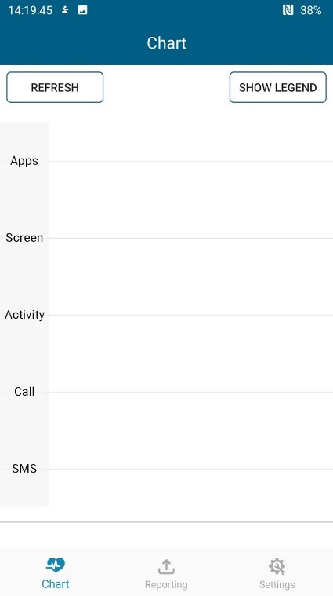 | 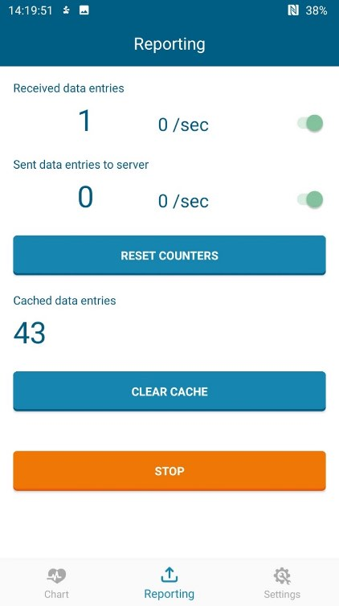 | 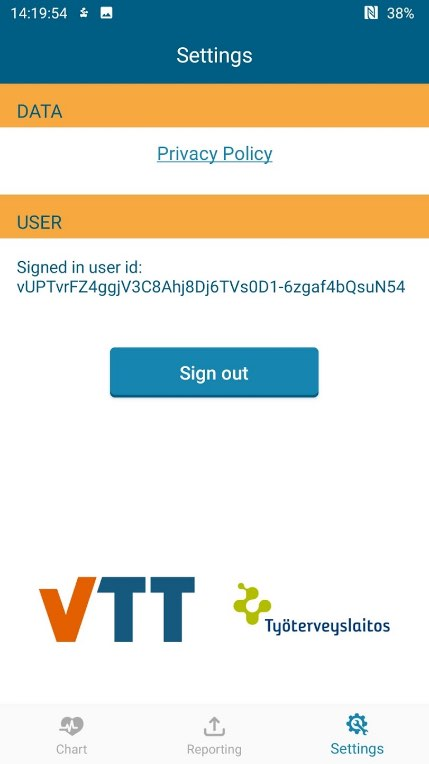 |
What does it record?
Stress Monitor records three categories of data: (i) the types of_applications_ that you’re using on your smartphone (e.g. “communication” and “shopping”); (ii) a predication of your movement (e.g. “running”, “in vehicle”) and (iii) a number to represent your location to understand where movement and application usage occurs more generally, for example, if you use shopping applications more when at one location. All data recorded by Stress Monitor is anonymised.
How is it used?
There are two parts to Stress Monitor: (i) it automatically records application usage; and (ii) it sends questionnaire notifications. The first part requires no interaction with Stress Monitor as it will run in the background and record this data by itself.
Questionnaires are sent through Stress Monitor to help provide context for how you were feeling throughout the day at pre-determined times, which are currently 09:00, 13:00, 17:00 and 21:00. A typical questionnaire is illustrated below to highlight its short length:

Data transfer protocol for patients
As a patient: do I need to do anything on a daily basis or all N days?
No. The Stress Monitor application records information in the background and will be installed on your personal smartphone. The application prompts questionnaires related to fatigue and sleep at pre-defined times: 09:00, 13:00, 17:00 and 21:00. The questionnaires can be answered within one hour from the notification by clicking the banner on the top of screen, e.g. 9:00-10:00.
However, on your first visit you will need to download, install, and log into the stress monitor application on your personal Android smartphone or the provided smartphone. Once you are logged in, you will provide your hash id from within the application’s settings to the clinician. This helps us associate data collected within_stress monitor_ with other data collected through the study, such as eBedSensor. Details on how to view and access this are outlined insection 3.
As a patient: do I need to do anything after each individual period of device / app use ended?
Not applicable.
As a patient: do I need to do anything after my full periods of use of a specific device / app ends?
Not applicable.
Data transfer protocol for professionals
As a professional: do I need to do anything on a daily basis or all N days (for each patient using a specific device / app)?
Yes. On the patient’s first visit to the site you must support them installing and logging into the stress monitor application. You must also take a written record of thehash id from within the stress monitor application, either from the patient’s smartphone or the provided smartphone depending on which one is chosen for use. Details on how to view and access this are outlined insection 2.
As a professional: do I need to do anything after each individual period of device / app use ended (for each patient using a specific device / app)?
Not applicable.
As a professional: do I need to do anything after the full periods of use of a specific device / app ends (for each patient using a specific device / app)?
Not applicable.
Original device setup and pairing
If handling a device and it arrives new: what needs doing before it gets sent to a study centre?
Put into inventory management?
N/A
Needs firmware update?
N/A
Pairing with a companion application?
N/A
Any account setup required?
TODO
Needs pairing with hub device?
N/A
Any assembly required?
N/A
Package together with which other devices for which study centre?
N/A
If handling an application: what needs doing before a study centre can use the app?
Do we need to get accounts from the application provider?
No. The participant must login with their personal email address and they will receive an email to verify their account. You may receive this email in your SPAM folder, so please check there if you have not received the registration email within 5-minutes.
Can the software be downloaded, or do we need to make it available?
The software must be downloaded and installed on the participant’s personal smartphone.
Does it need to be installed on the hub devices?
No. The application must be installed on the participant’s personal device.
Do we need to activate study accounts?
No.
Device pre-setup and configuration
What sort of a device / application is this, what is it for and how does it work?
The Stress Monitor application records mobile phone usage in the background about the following information:
- Application usage: the time that an application spends open per minute. The specific application is not identified and instead is assigned a category: “business”, “communication”, “entertainment”, “infotainment”, “shopping”, “social”, “travel/navigation/maps”, “utility”, “wellbeing”, “other”, and “unknown”.
- Screen on/off events.
- Activity as predicted by the Android platform: “in vehicle”, “on bicycle”, “on foot”, “walking”, “running”, “tilting”, “still”, and “unknown”.
- Location data provided as anonymised cluster identifiers. For the first two weeks of using the application, the phone collects geolocation, once a minute. This data is stored on the phone only. Once enough data is collected, this location is recorded and uploaded to a VTT server for routine detection and anonymisation. We utilise machine learning to find locations you visit often (such as your home, workplace, etc.) and assign numerical IDs (e.g. 0, 1, …) to the most visited ones. This mapping between geolocations and IDs is then sent to your phone, where it is used to categorise the data we collect. Only the ID of the location will be used - never the geolocation. The geolocations transferred to the server are not saved on the server, and once this process is completed, the original location data is deleted from your phone.
What has already been done in pre-setup for the device or application?
N/A
What will need to be done before a patient can start using this?
Any account setup required?
If the participant has an Android device, then you must ask if they are willing to install and register for the VTT Stress Monitor application on their personal device. If they are, then please guide them through the instructions below, otherwise user should log into the VTT Stress Monitor application on the Samsung A40 to be provided to the participant. This requires knowing the smartphone’s DEVICE_ID of looking up its associated email and password from the password vault. Once you have identified the device, please open the application (which is located on the home screen), and “Sign in with Google” using the associated password from the vault.
Installing VTT Stress Monitor
Please download and install the application direct from the Google Play Store. To do this, open the “Play Store” app, which looks like:. Once open, search for ”stressmonitorV4” and tap the first result as below:
 |
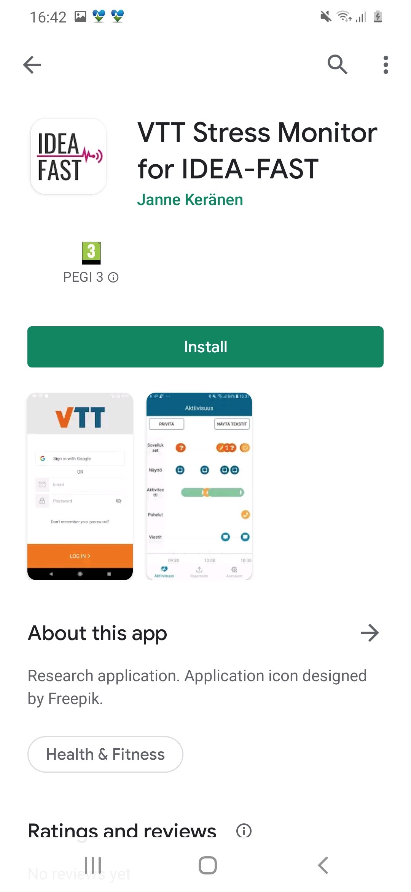 |
| Figure N: Search results |
Note:If you cannot see the application when searching as above, open a browser and visit the following URL, which will take you to the application on the Play Store:https://ply.gl/fi.vtt.stressmonitorv4
Signing in with Google
Once the application has installed, tap “Sign in with Google”, enter your password and your will be taken to the home screen
 |
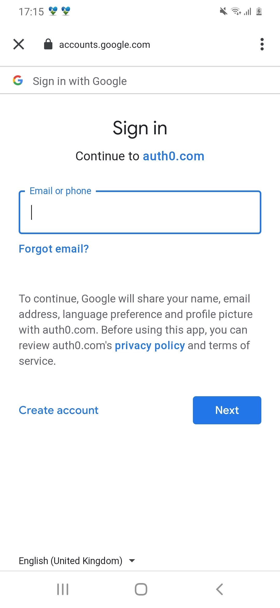 | 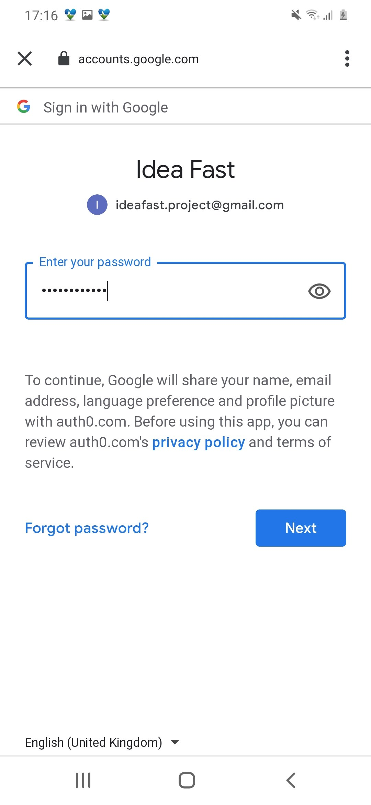 |
| Figure N: Tap “Sign in with Google” | Figure N: Enter your email | Figure N: Enter your password |
After you enter your email and password you will be logged into the Stress Monitor application. Please go to the settings page to view your_hash id_ that should be shared with the clinical staff on your first visit.
Needs pairing with hub-device?
Not applicable.
Any configuration / assembly required?
Yes. Once the Stress Monitor is installed it must be configured to record data in the background as illustrated below:
Allow mobile phone access
|
Allow Physical Activity Monitoring
|
Allow access to location
|
|
Change power usage Open “Stress Monitor”. On the first time, the app asks to modify the battery optimizations setting 
|
Select the dropdown and choose “all” to view the available applications, which appear in alphabetical order.
|
Scroll down until you see_Stress Monitor_ and verify that it is switched off; it must be grey.
|
|
Enable statistics usage Open_Stress Monitor_and click “go to settings” from the dialog that appears 
|
Select “Stress Monitor” from the list as above.
|
Ensure that “Allow usage tracking” is_blue_indicating that it is switched “on”.
|
Once you have logged in and during your first site visit you will need to show the clinical staff member the_hash id_ from the Settings tap next to “Signed in user id:”. Please provide the full hash_id of this when on site. This will allow the IDEA-FAST project to associate the data recorded through the stress monitor application with other data recorded during the study, such as the eBedSensor. You can copy the hash using the button on its right, or - if you have a more recent version of the app - by scanning the QR code with your own phone.
| 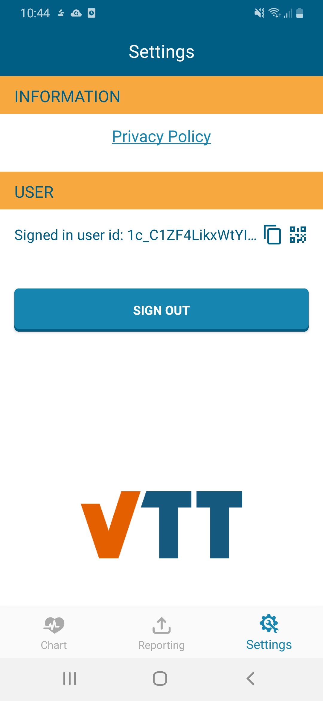 | 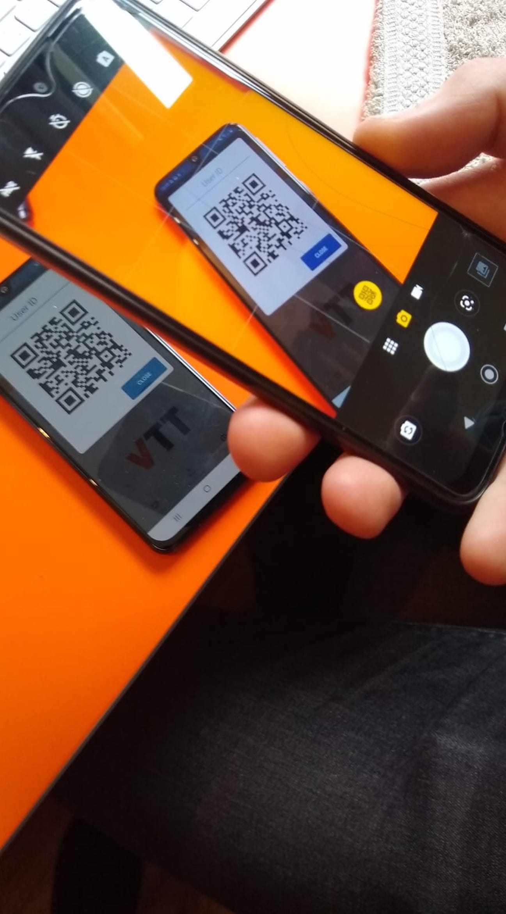 |
| Please provide the_hash id_ when first visiting the clinical site by using the copy feature | You can also use the QR code feature to scan with your own phone. Most phone camera apps will automatically recognise a QR code - or you can download a QR reader app. This allow you to copy the hash id on your personal phone (and send it to yourself on email for example) |
Device How To / setup for wear
How can I get help with using this?
If you have any other questions or concerns, please contact your local study centre:
| Newcastle, United Kingdom | Rotterdam, Netherlands | Kiel, Germany | Muenster, Germany |
| Person Name Centre Name Location |
Person Name Centre Name Location |
Person Name Centre Name Location |
Person Name Centre Name Location |
What sort of a device / application is this, what is it for and how does it work?
Stress Monitor is a mobile application that runs in the background and records movement activity, location and information about your mobile usage, such as battery status. This data gives information about behaviour based on time, location and general mobile usage. Data is then grouped into categories, such as communication or social media.
- The names of applications that are used are not stored anywhere, only the category that the application belongs to (e.g. communication/social) is collected.
- No data of the content of the applications (e.g. text typing, voice input) or the keystrokes is collected.
- No physical location data is collected. The location data is grouped into clusters with abstract identifiers (e.g. 1,2,3…) and only these identifiers are collected.
- No personal information is stored by the application that can be used to identify you.
The application also prompts questionnaires related to fatigue and sleep at pre-defined times: 09:00, 13:00, 17:00 and 21:00, which must be answered within one hour by clicking the banner on the top of screen, e.g. 9:00-10:00. An example of the questionnaire appearing at 13:00 is presented in the figure below.
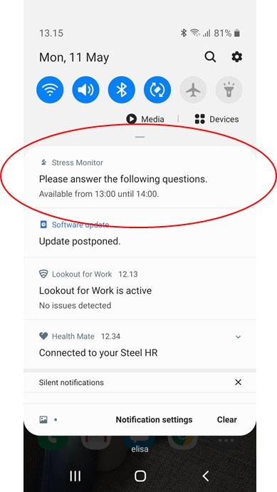
Figure: Receiving a notification to complete the Stress Monitor questionnaire
Question and Response Types
The questions and associated response format change based on the time of day. There are four answer formats: slider as illustrated images A and B, text entry (where you write a response), pull down menu as illustrated in image C and D.
| 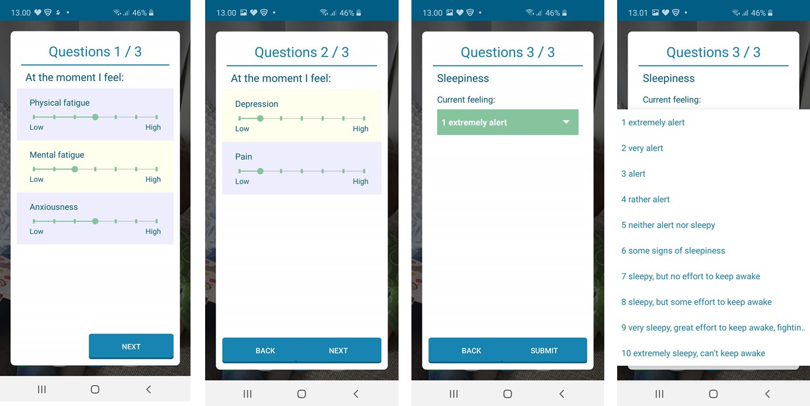 |
| A, B, C, D |
An overview of what questions to expect is outlined in the table below:
| Launch time | Questions | Answer format |
| 9:00, 13:00, 17:00, 21:00 | Physical fatigue | Slider |
| Mental fatigue | Slider | |
| Anxiousness | Slider | |
| Depression | Slider | |
| Pain | Slider | |
| 13:00, 17:00 | Sleepiness | Pull down menu |
| 21:00 | Physical activity | Slider |
| 21.00 | Mental activity | Slider |
| 21:00 | Comments of the day | Text entry |
| 9:00 | Bedtime | Time entry dialog (Android) |
| 9:00 | Wake up time | Time entry dialog (Android) |
| 9:00 | Sleep quality | Slider |
| 9:00 | Time before falling asleep | Pull down menu |
| 9:00 | Time awake during night | Pull down menu |
What will I need to do before I can start using this?
Any account setup required?
Yes. You should install and log into the stress monitor application and also provide the hash id from within the application settings to the staff member on site on your first visit.
Installing Stress Monitor
Please download and install the application direct from the Google Play Store. To do this, open the “Play Store” app. Once open, search for ”VTT Stress Monitor for IDEA-FAST” and tap the first result as below:
| 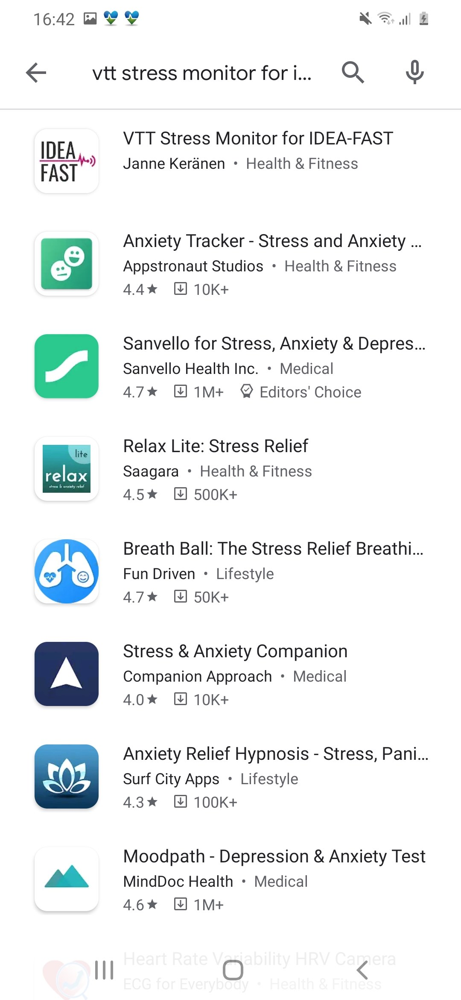 |  |
Note:If you cannot see the application when searching as above, open a browser and visit the following URL, which will take you to the application on the Play Store:https://ply.gl/fi.vtt.stressmonitorv4
Signing in with Google
Once the application has installed, tap “Sign in with Google”, enter your password and your will be taken to the home screen
| 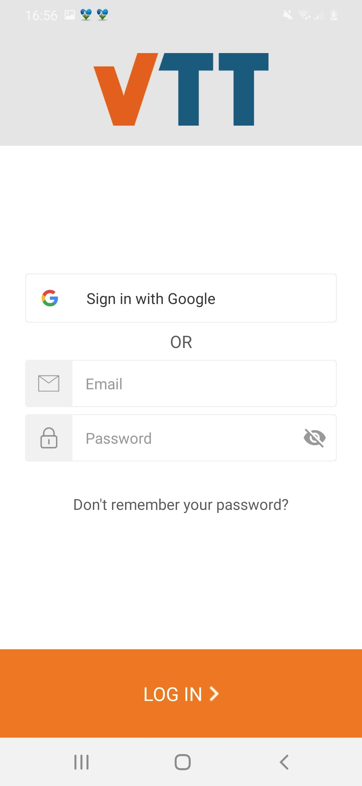 |  |
 |
| Figure N: Tap “Sign in with Google” | Figure N: Enter your email | Figure N: Enter your password |
After you enter your email and password you will be logged into the Stress Monitor application. Please go to the settings page to view your hash id that should be shared with the clinical staff on your first visit.
Needs pairing with hub-device?
Not applicable.
Any configuration / assembly required?
Yes. Once the Stress Monitor is installed it must be configured to record data in the background as illustrated below:
|
Allow mobile phone access 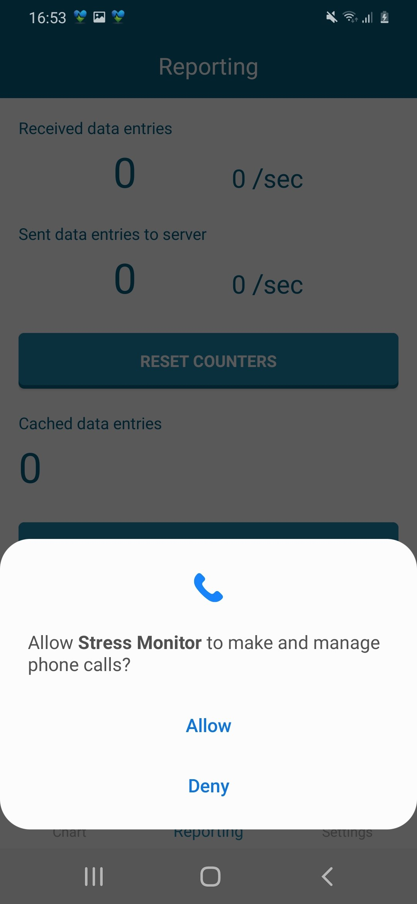 |
|
Allow Physical Activity Monitoring 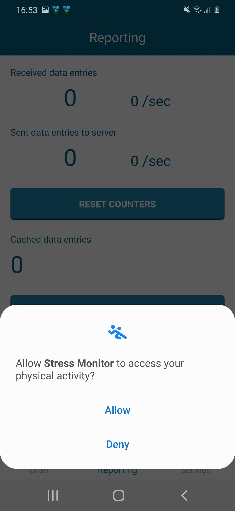 |
|
Allow access to location 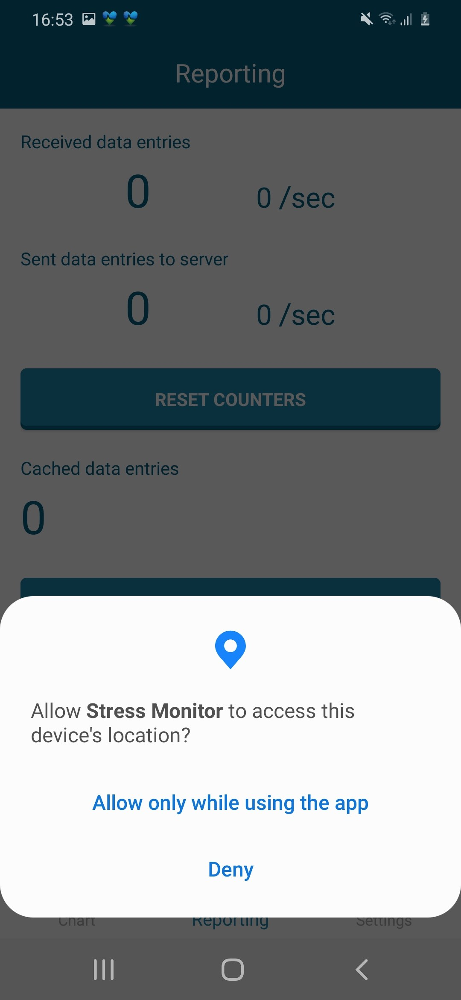 |
|
Change power usage Open “Stress Monitor”. On the first time, the app asks to modify the battery optimizations setting 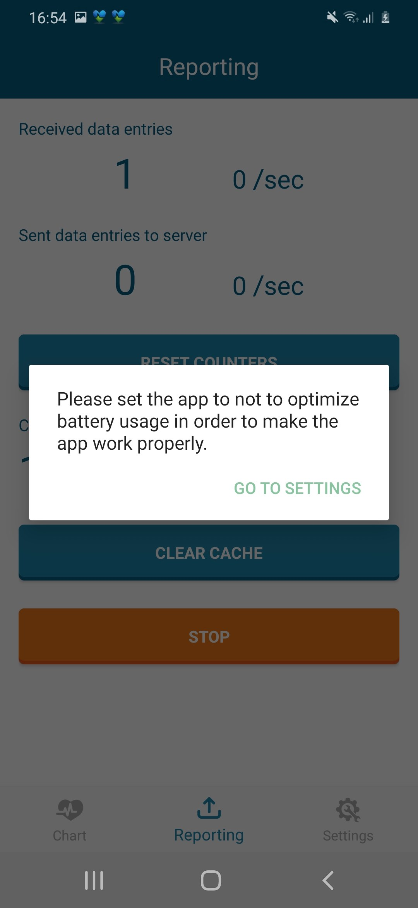 |
| Select the dropdown and choose “all” to view the available applications, which appear in alphabetical order. 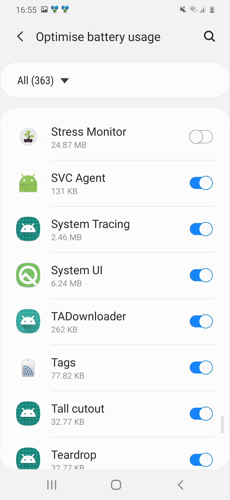 |
| Scroll down until you see_Stress Monitor_ and verify that it is switched off; it must be grey. 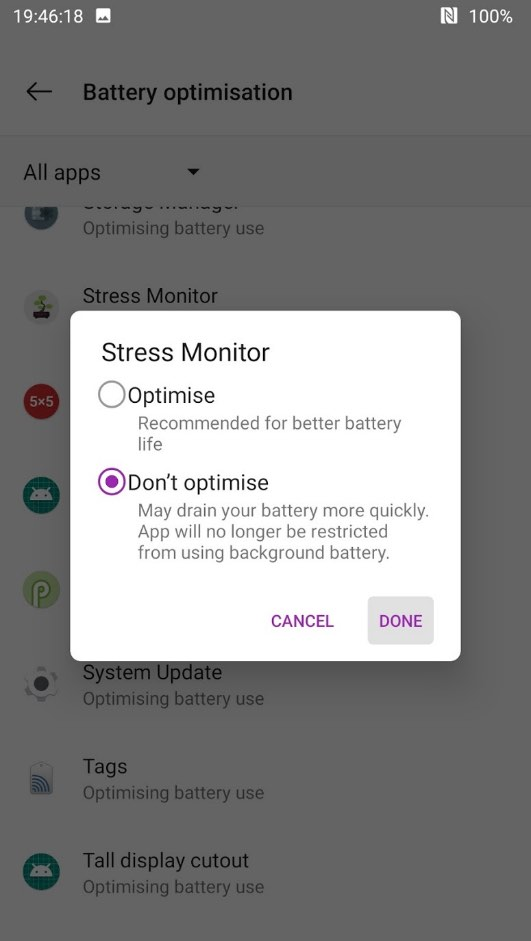 |
|
Enable statistics usage Open_Stress Monitor_and click “go to settings” from the dialog that appears. 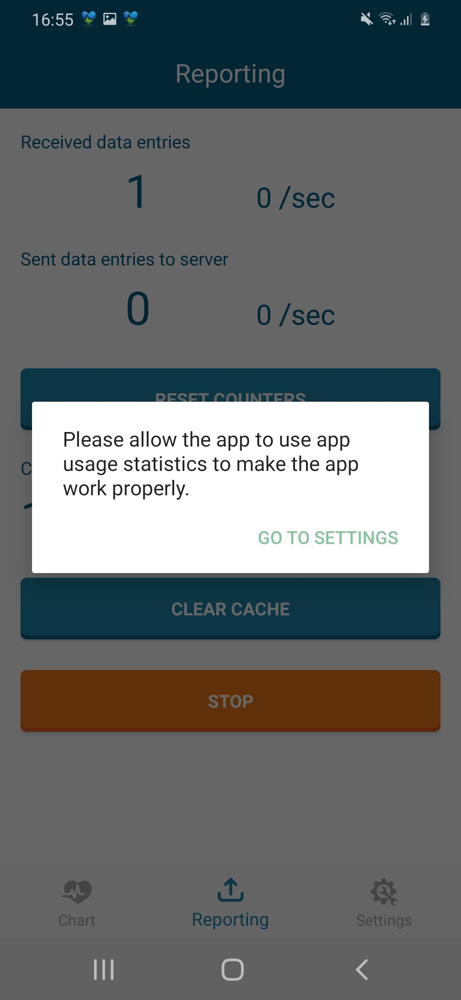 |
| Select “Stress Monitor” from the list as above. 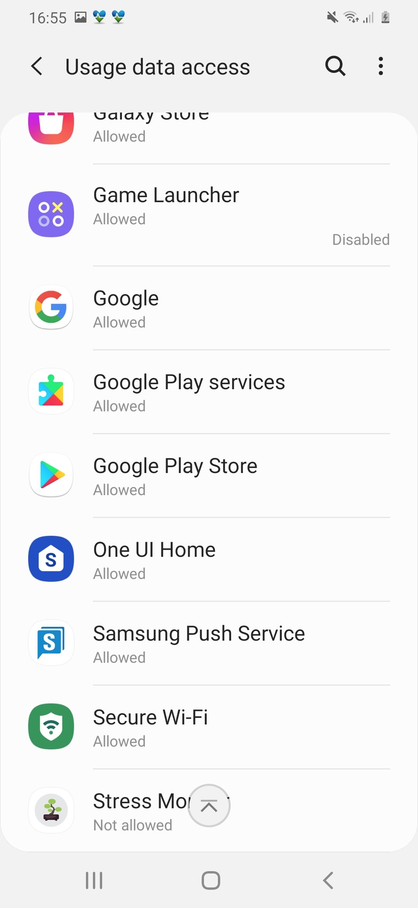 |
| Ensure that “Allow usage tracking” is_blue_indicating that it is switched “on”. 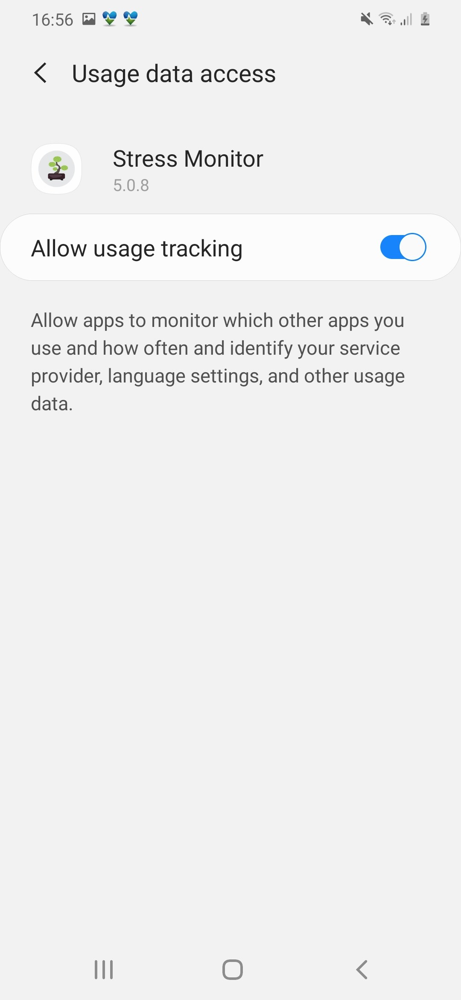 |
Once you have logged in and during your first site visit you will need to show the clinical staff member the hash id from the Settings tap next to “Signed in user id:”. Please provide this when on site. This will allow the idea fast project to associate the data recorded through the stress monitor application with other data recorded during the study, such as the eBedSensor.
| Please provide the_hash id_ when first visiting the clinical site by using the copy feature | You can also show the QR code feature to allow the clinician to scan it with your their phone. Most phone camera apps will automatically recognise a QR code - or you can download a QR reader app. This allow them to copy the hash id on their personal phone (and send it to themselves on email for example) |
Troubleshooting/FAQ
The device / app seems to have stopped working: what should I do?
Battery?
N/A
Connectivity issues?
N/A
Need to restart or log in again?
N/A
Using the device / app is uncomfortable to me: what can I do?
N/A
Adjust wear style?
N/A
Adjust usage pattern?
N/A
Device return
What do I do when a period of device use is over?
You should uninstall_Stress Monitor_from your personal smartphone after the study period.
Before the device is returned or disposed of: does any data need to be transferred?
N/A
Do I need to return the device somewhere?
N/A
Returned device processing and cleaning / an application use period for a participant has ended
Trigger Data Transfer Protocols?
N/A
Where should the device be returned?
N/A
Device recycling and provisioning
How will the devices and applications be supplied to the study site?
N/A
What to do with devices once the study site is entirely done with them?
N/A